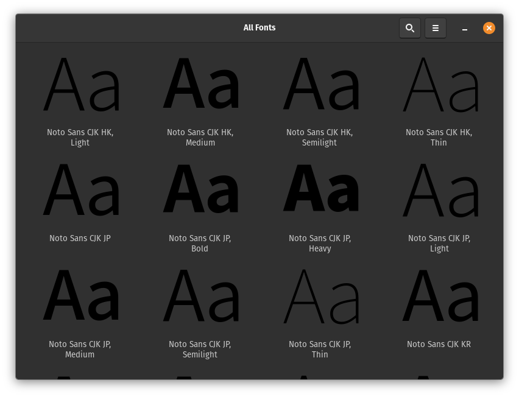

Remove Extra Fonts and Languages on Ubuntu
I don't know about you, but I only speak, read and write fluently in my native language: English. So when I go hunting for a font I don't want to see this:

Or this:

According to the documentation, Noto provides "high-quality fonts for writing in all modern and ancient languages." So unless you're Tolkien you probably don't need it. And according to its package description:
The name "Noto" is short for "No Tofu"... Tofu (豆腐) is Japanese jargon for unicode replacement character "�" (U+FFFD)
Even after uninstalling it from my system, those Japanese characters appear to render correctly in the browser and in the terminal:

Now the Fonts app and font picker are more usable on my system.
I also removed a ton of extra language packages that were added to my system during its initial setup. Modify as desired if you speak the Queen's English or something else:
#!/usr/bin/env bash
aptitude purge --purge-unused \
fonts-arphic-ukai \
fonts-arphic-uming \
fonts-noto-cjk \
fonts-noto-cjk-extra \
fonts-noto-core \
fonts-noto-ui-core \
gnome-user-docs-de \
gnome-user-docs-es \
gnome-user-docs-fr \
gnome-user-docs-it \
gnome-user-docs-ja \
gnome-user-docs-pt \
gnome-user-docs-ru \
gnome-user-docs-zh-hans \
hunspell-ar \
hunspell-de-at-frami \
hunspell-de-ch-frami \
hunspell-de-de-frami \
hunspell-en-au \
hunspell-en-ca \
hunspell-en-gb \
hunspell-en-za \
hunspell-es \
hunspell-fr \
hunspell-fr-classical \
hunspell-it \
hunspell-pt-br \
hunspell-pt-pt \
hunspell-ru \
hyphen-de \
hyphen-en-ca \
hyphen-en-gb \
hyphen-es \
hyphen-fr \
hyphen-it \
hyphen-pt-br \
hyphen-pt-pt \
hyphen-ru \
ibus-chewing \
ibus-libpinyin \
ibus-mozc \
ibus-table-cangjie3 \
ibus-table-cangjie5 \
ibus-table-quick-classic \
ibus-table-wubi \
language-pack-ar \
language-pack-ar-base \
language-pack-de \
language-pack-de-base \
language-pack-es \
language-pack-es-base \
language-pack-fr \
language-pack-fr-base \
language-pack-gnome-ar \
language-pack-gnome-ar-base \
language-pack-gnome-de \
language-pack-gnome-de-base \
language-pack-gnome-es \
language-pack-gnome-es-base \
language-pack-gnome-fr \
language-pack-gnome-fr-base \
language-pack-gnome-it \
language-pack-gnome-it-base \
language-pack-gnome-ja \
language-pack-gnome-ja-base \
language-pack-gnome-pt \
language-pack-gnome-pt-base \
language-pack-gnome-ru \
language-pack-gnome-ru-base \
language-pack-gnome-zh-hans \
language-pack-gnome-zh-hans-base \
language-pack-gnome-zh-hant \
language-pack-gnome-zh-hant-base \
language-pack-it \
language-pack-it-base \
language-pack-ja \
language-pack-ja-base \
language-pack-pt \
language-pack-pt-base \
language-pack-ru \
language-pack-ru-base \
language-pack-zh-hans \
language-pack-zh-hans-base \
language-pack-zh-hant \
language-pack-zh-hant-base \
libchewing3 \
libchewing3-data \
libmarisa0 \
libopencc-data \
libopencc1.1 \
libpinyin-data \
libpinyin13 \
libreoffice-help-de \
libreoffice-help-en-gb \
libreoffice-help-es \
libreoffice-help-fr \
libreoffice-help-it \
libreoffice-help-ja \
libreoffice-help-pt \
libreoffice-help-pt-br \
libreoffice-help-ru \
libreoffice-help-zh-cn \
libreoffice-help-zh-tw \
libreoffice-l10n-ar \
libreoffice-l10n-de \
libreoffice-l10n-en-gb \
libreoffice-l10n-en-za \
libreoffice-l10n-es \
libreoffice-l10n-fr \
libreoffice-l10n-it \
libreoffice-l10n-ja \
libreoffice-l10n-pt \
libreoffice-l10n-pt-br \
libreoffice-l10n-ru \
libreoffice-l10n-zh-cn \
libreoffice-l10n-zh-tw \
mozc-utils-gui \
mythes-ar \
mythes-de \
mythes-de-ch \
mythes-en-au \
mythes-es \
mythes-fr \
mythes-it \
mythes-pt-pt \
mythes-ru \
wbrazilian \
wbritish \
wfrench \
witalian \
wngerman \
wogerman \
wportuguese \
wspanish \
wswiss
Note the following packages were not included in the script above:
- hunspell-en-us
- hyphen-en-us
- language-pack-en
- language-pack-gnome-en
- libreoffice-help-en-us
- mythes-en-us
- wamerican
Also note I'm running Pop!_OS, which might include different packages than Ubuntu.